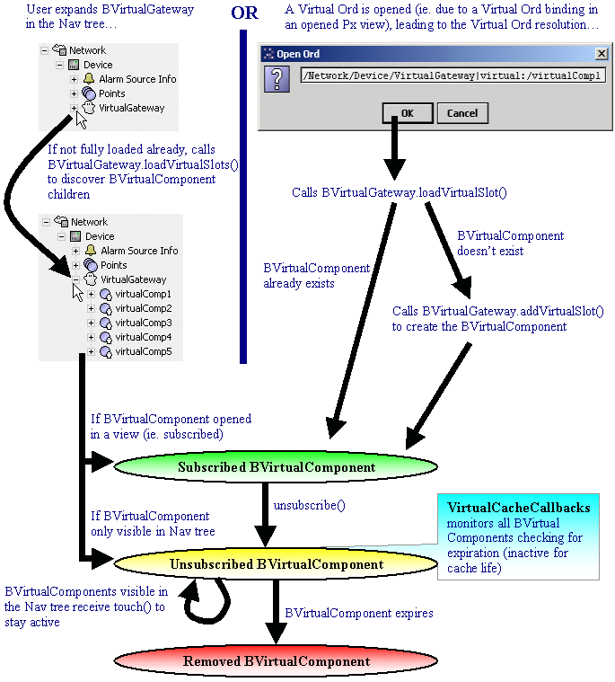

Refer to the Virtual API (available only in Niagara 3.2 and beyond).
The virtual components feature was originally driven by a common use case of most drivers in Niagara AX. However, since the original brainstorming for "phantom" components (later termed "virtual" components), it has since grown to cover a broader range of possible applications. This document (intended for developers) will focus its examples on driver applications, but the idea of transient, on-demand components can obviously reach to many other applications.
As mentioned, the term virtual components refers to transient, on-demand components in a station database that only exist when needed. Virtual components are created dynamically only when they are first required by the station (i.e. enter a subscribed state), and then when they are no longer needed (i.e. enter an unsubscribed state), they are automatically cleaned up from the station database (subject to virtual cache life constraints). This lifecycle for virtual components provides for efficiency. The key concepts that drive virtual components are their virtual Ords (Object Resolution Descriptors) and their existence within a virtual component space. The Ords for virtual components follow the SlotPath design (refer to VirtualPath) and must uniquely define virtual components (and provide enough information to create the virtual component at runtime). These unique, on-demand virtual components live within a Virtual Component Space, which is different from the normal component space which manages components that are persisted in the station. The link between the normal component space and the virtual component space is through the Virtual Gateway. There is a one-to-one relationship between a virtual gateway and its corresponding virtual component space, so it is possible to have multiple virtual gateways and virtual component spaces in the same running station. These concepts will be described in more detail in the class descriptions that follow.
From a drivers perspective, virtual components means that driver data can be addressed without premapping. Prior to this new feature, the old Niagara AX model used by drivers boiled down to a collection of BComponents used to normalize driver data. For example, most drivers contain a device network, devices, and proxy points (control points with proxy extensions). Proxy points are useful for modeling the smallest pieces of driver data ("point" information) and normalizing them for use in the Niagara AX environment. This model works well for linking proxy points to control logic for monitor and control. The problem with this model is that every piece of driver data that a user may want to visualize/configure in Niagara AX requires the overhead of a persistent component (i.e. proxy point) existing somewhere in the station's component space. The overhead of having persistent, premapped components limits the capacity of points that a station can monitor. This limitation especially becomes a problem on small embedded platforms (such as a JACE) where memory is limited.
There are two common driver use cases we identified where a user might want to have access to driver data, while not wanting the extra overhead of using persistent components. The first is that a user wants to build a Px view to look at device point data (simply for monitoring purposes). In this case, simply a polled value is sufficient to present the data to the user in the view only when it is needed (the view is open). The second use case is for configuration/commissioning a device in which the user wants to see a snapshot (i.e. property sheet) of the values within the device, and allow the user to monitor/modify these device values for one time configuration purposes. In both of these cases, building persistent components to model the driver data is not necessary and simply costs the user extra overhead. Instead, a transient display of the driver data is useful only when the user enters the view, but at all other times, the values are not needed and do not need to be consuming memory (i.e. not needed for linking to any other logic). Thus virtual components is a solution to both of these use cases.
In general, linking in the virtual component space is not supported, as virtual components are not persisted (thus any user created links would be lost).
The javax.baja.virtual package contains the base classes for supporting virtuals. The following gives a brief description of each class in this package:
BVirtualComponent is a
BComponent, however
it extends the functionality to support living in a virtual component space by keeping
track of its last active ticks. The last active ticks are the clock ticks when the
virtual component was last needed (i.e. the moment the virtual component switches from a
subscribed state back to an unsubscribed state, the last active ticks are updated to
indicate the ticks when the virtual component was last in use*). The last active ticks
for each virtual component in the virtual component space are consistently monitored by the space's
VirtualCacheCallbacks instance, which uses this information to determine
when the virtual component is subject to auto-removal (clearing from the cache).
Virtual Components can also be spared from auto removal if the instance is the root
component of the virtual component space, or if the auto-removal behavior is specifically
disabled for the virtual component (by subclassing and overriding the performAutoRemoval()
callback). By default, virtual components also override the normal BComponent
behavior to specify their virtual nav Ord, enforce a few parent/child restrictions**, and
provide a convenient way to retrieve the parent BVirtualGateway
instance, which is important because the gateway is the link between the normal component
space and the virtual component space.
The BVirtualComponent class is the key structure to use for modeling
objects in your virtual space. You can use BVirtualComponent (or a subclass
of it) to model your data (or data groupings), and since BVirtualComponent is
itself a BComponent, it supports all of the normal component life-cycle features.
Just remember BComponent instances (those that aren't BVirtualComponents or BVectors) should
not be used in the virtual component space, so keep this in mind when determining what types
of frozen/dynamic slots your BVirtualComponents need to model the data.
* NOTE - The last active ticks for a virtual component are also modified by a "touch" feature of the navigation tree in Workbench. Basically, for any virtual component's nav tree node currently in view in Workbench, there is a periodic message sent that "touches" the virtual component, in order to keep it active and prevent it from being auto cleaned. This is useful because a virtual component simply viewed in the nav tree is not guaranteed to be in a subscribed state.
** NOTE - The general rule that should be followed is that the virtual component space should
not contain BComponent instances that are not BVirtualComponents. So
there are a few child/parent checks in place that attempt to enforce this rule. Of course,
BVirtualComponent instances living within a virtual component space can contain
other non-BComponent children, such as BSimples, BStructs,
and there is even an exception made for BVectors. The reason you should keep
non-virtual BComponent children out of the virtual component space is because
it can break the virtual cache cleanup mechanism (discussed below for the VirtualCacheCallbacks
class).
BVirtualComponentSpace is an extension of
BComponentSpace which
contains a mapping of BVirtualComponents (organized as a tree).
The virtual component space is created at runtime when a BVirtualGateway instance
is started in the station's component space. There is a one-to-one relationship between the
virtual gateway and its virtual component space. The virtual component space has a
few supporting Callbacks classes. In addition to those provided by BComponentSpace
(LoadCallbacks, SubscribeCallbacks, and TrapCallbacks),
BVirtualComponentSpace kicks off an instance of VirtualCacheCallbacks
(described below). It is important to remember that the scope of the virtual component
space is limited to its tree of virtual components, but it also has a reference to its
BVirtualGateway instance which provides the link to the normal component space.
BVirtualGateway is an abstract subclass of BComponent
designed to reside in the station component space and act as a "gateway" to
its corresponding virtual component space. As mentioned previously, there is a
one-to-one relationship between the virtual gateway and its virtual component space.
For the virtual gateway, this means that the nav children displayed under the
gateway in the nav tree will be the nav children for the root component of the
virtual space. Just to clarify the point, the virtual gateway functions as the
link between the normal (station) component space and its virtual space. Thus it overrides
all of the nav methods to route to the virtual space's tree (of virtual components).
In practice, you should always avoid adding frozen/dynamic slots as children of the
virtual gateway directly, as the nav overrides will route users to the virtual space by default,
thus making it difficult and confusing to view/change slots that are direct children on
the virtual gateway itself.
The other important function of the virtual gateway is to provide the hooks for
subclasses to load/create virtual components at runtime. This includes a few callback methods
that the framework makes to the virtual gateway to tell it to load
an individual virtual slot or load all of the virtual slots for a given
virtual component. Two important factors to consider when subclassing BVirtualGateway
and its methods are:
By contract, whenever slots are added to virtual components, they should always
be assigned a slot name that is the escaped virtual path name (i.e. use
SlotPath.escape(virtualPathName)). This is very important as virtual path names
can be unescaped, but the contract is that their corresponding slot path name is simply the
escaped version of the virtual path name. In order for virtual lookup to work correctly, this
rule must be followed.
Due to the possibility of a partial loaded state supported by virtuals, when you subclass
BVirtualGateway (and even BVirtualComponent) and implement its methods,
you should always be keenly aware of the present subscription state of the virtual components.
For example, the BVirtualGateway load methods could be called and cause a new
slot to be created for a parent virtual component while that parent is already in a subscribed state.
So this could affect how the new virtual slot should be handled (i.e. it may need to be added to a
poll scheduler for updates). Subclasses should always be aware of this potential state and perform
the proper checks to handle this case.
BVirtualScheme extends BSlotScheme and defines the "virtual" ord scheme
ID. It works in close conjunction with VirtualPath for resolving virtual Ords (see
below for further details).
BVirtualComponentSpace with a purpose to manage the
virtual cache (i.e. to determine when its appropriate to auto cleanup virtuals that are no
longer in use). The default implementation of VirtualCacheCallbacks has a
shared thread pool (used by multiple virtual component space instances) designed to monitor
the virtual components in each registered virtual space, and check the min/max virtual
cache life for any unused virtual components. The idea is that virtual components, when no
longer needed, will remain in the cache for a certain cache life before they get automatically
removed. The following static variables allow for tuning the performance of the virtual
cache management (all default values can be tweaked by making the appropriate
settings in the system.properties file):
public static final BRelTime MAX_CACHE_LIFE - Specifies the default virtual
cache life maximum (default 45 seconds). When a virtual component expires, it
will remain in memory for a maximum of this amount of time before it will be automatically
cleaned up from the cache (assuming the virtual component is not re-activated in the
meantime).
public static final BRelTime MIN_CACHE_LIFE - Specifies the default virtual
cache life minimum (default 25 seconds). When a virtual component expires, it
will remain in memory for a minimum of this amount of time before it will be subject to
automatic clean up from the cache (assuming the virtual component is not re-activated in the
meantime). This minimum cache life is only a factor when the virtual threshold limit has
been exceeded (meaning that virtuals need to be cleaned up faster than normal). If the
virtual threshold limit has not been exceeded, the maximum virtual cache life will be used
(normal operation).
public static final int VIRTUAL_THRESHOLD - Specifies a global virtual threshold
limit (default 1000), above which virtuals will start being auto cleaned from the cache quicker as space is
needed (i.e. the MIN_CACHE_LIFE will be used in the cache life determination
when the number of virtuals in the station exceeds this threshold
limit, otherwise the MAX_CACHE_LIFE will be used when the number of virtuals doesn't
exceed this limit).
public static final long VIRTUAL_THRESHOLD_SCAN_RATE - Specifies the default time
(in milliseconds) in which to perform a full scan of the station for virtuals, used for
threshold level checking. The default is 1000, which means that every second, a full scan
will occur. A value of zero disables the virtual threshold checking feature entirely.
public static final int THREAD_POOL_SIZE - Specifies the maximum number of worker
threads in the thread pool shared by VirtualCacheCallbacks instances. There is
a VirtualCacheCallbacks instance per virtual component space, however, the default
implementation shares a common worker thread pool. Therefore, this setting determines the
maximum number of virtual cleanup worker threads (10 default).
public static final int SPACES_PER_THREAD - Specifies the ideal number of
virtual component spaces managed per worker thread in thread pool (this limit can be
exceeded if all threads in the pool are already at capacity). The default is 5 virtual
spaces (optimum) per thread.
VirtualPath extends SlotPath and allows for resolving
BVirtualComponents (and their child slots) using unescaped slot names
in the path (note that this is different from SlotPath which enforces the
rule that only escaped slot names can be contained in the path). The '/', '|', '$', and
':' characters are reserved and not allowed in a virtual path entry. Also, the "../" is
reserved for backups.
The most common use case of VirtualPath follows the following format:
host:|session:|space:|Ord to virtual gateway:|virtual:virtual path
For example (disregard the line wrap):
local:|fox:|station:|slot:/Config/Drivers/YourNetwork/YourDevice/YourVirtualGateway
|virtual:/Virtual Component A/Virtual Component B/Output Value
This example shows how the virtual gateway is always the link point between the normal component
space and the virtual space. The "|virtual:" in the example above indicates the jump to the virtual
component space. When resolving such an Ord, once it starts parsing the virtual path, it will start from
the left and work to the right (the "/" acts as the separator between virtual slots). So this means it
will first check for the existence of a slot named "Virtual$20Component$20A" under the root component of
the virtual space and return it if it exists (remember that by contract, virtual path names should be escaped
to form the slot name). If it doesn't already exist, the virtual gateway will be given the opportunity to create
a virtual object to represent it given the virtual path name and parent (subclasses will normally put enough information
in the virtual path to know how to create the object). This process continues from left to right until the virtual
path has resolved the last in the list. The example above would be represented in the nav tree like this:
Config
|
|
|____Drivers
|
|
|____YourNetwork
|
|
|____YourDevice
|
|
|____YourVirtualGateway
| (entrance to virtual space)
| virtual space root component (hidden)
|____Virtual Component A
|
|
|____Virtual Component B
|
|
|____Output Value
It is also worth noting that due to the virtual/slot path name contract, the following Ord is functionally
equivalent to the example above (disregard the line wrap):
local:|fox:|station:|slot:/Config/Drivers/YourNetwork/YourDevice/YourVirtualGateway
|virtual:|slot:/Virtual$20Component$20A/Virtual$20Component$20B/Output$20Value
The following diagram attempts to show the common lifecycle of a virtual component.
